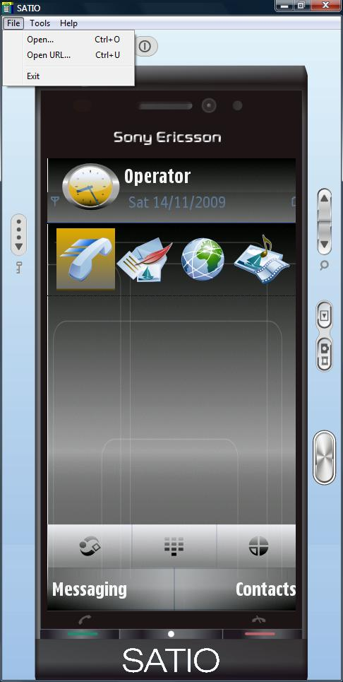
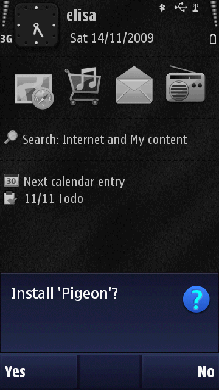
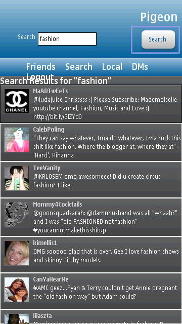

Read the S60 5th Edition Release notes and install the prerequisite tools ( Active Perl 5.6.1, Java Runtime 1.6).
Download and install the S60 5th Edition SDK.
Install the Sony Ericsson Satio skin for the S60 5th edition emulator (skin/semc_extension_1.0.0.msi). Note that this emulator only runs on Windows PC.
Note: PhoneGap for Symbian has no native codebase, and requires no building. This may seem unusual to a developer who has used PhoneGap for one of the other platforms (BlackBerry, iPhone, Android), for which native code must be built around the web files (i.e. html/css/js files built into a package with Java or C). This is because PhoneGap for Symbian uses the WebRuntime technology to package the web files, and thus all one needs is a web-app and the Symbian version of Phonegap.js.
Run the emulator from Start -> Programs -> S60 Developer Tools -> 5th Edition SDK -> v1.0 -> Emulator
Install the Pigeon demo application in the Emulator: File -> Open, and select /samples/Pigeon/Pigeon.wgz. The emulator will then prompt you to install the application. It will be in Applications on the emulator device.
Install the Pigeon demo application to the device: send the same Pigeon.wgz file as above to your device via Bluetooth, email, usb, etc. Symbian will recognize the file type and install it. You can also try the PhoneGap API demo app at /samples/PhoneGapDemo/symbian.wrt.demo.app.wgz. This file is a more complete demonstration of the various device functionalities exposed by the PhoneGap API.
 The sample application source code for Pigeon resides at /samples/Pigeon/www/. These files are just web technologies (html, css, js, etc), save for info.plist. Info.plist is an xml file which tells Symbian about the application. Properties are self-explanatory ... refer to /samples/Pigeon/www/info.plist for an example.
As the application is developed primarily on web technologies, design and functionality can be tested on the fly in a browser. Once you begin to implement phonegap APIs however, you will need to run them on the emulator or the device to test the device functions.
Other than info.plist, the only thing that will be new to a web developer in these apps is the PhoneGap API, which allows the developer to interact with the device. To make these apis available to your application, simply include phonegap.js, or phonegap-min.js, located in the /libs folder. These APIs should be consistent across all platforms, including iPhone, Android, BlackBerry, and Symbian. However note that this project is a work in progress and minor tweaks across platforms are still required. In particular, developers should be aware that each device uses different webkit builds, and different resolutions, so html, css and images may show up differently on different devices.
Refer to the PhoneGap API Documentation for the device functionalities that are exposed (such as Geolocation, Vibration, Contacts, and others).
Once you have your web files, phonegap.js, and info.plist complete (or ready to be tested at least) and in a www folder, simply compress the folder into a zip file, and rename its extension from .zip to .wgz. Then, install the file to the emulator or the device, as above.